brian
truong
software engineering
+
visual arts
Hello!
I'm a software engineering professional working at Microsoft.
I also like making art, some of which can be found
here.
In my spare time, I like volunteering, reading, and playing games.
My interests include:
* Full stack development
* Game development + design
* Deep learning AI
* UX/UI design
Education

Bachelor of Science, Computer Science
* Presidential Scholarship
* Summit Scholarship
Work experience
Developed a microservice agent that connects devices to
various Internet of Things cloud services, allowing for
telemetry reports and over the air updates of the device.
Designed and developed dashboards for administrators to quickly
audit user permissions and activities.
Refactored existing dashboards to improve performance and ensure
visual design language conformity.
Developed a microservice with a RESTful API to manage images from
customer repair orders on the cloud, integrating it into
preexisting software, and covering it with comprehensive unit tests.
Additionally, proactively prepared and presented a
cost-benefit analysis of moving towards serverless solutions.
Developed a modular Google Chrome start page to bolster employee productivity
As part of a team, designed a wearable device that helps users
track and use medication, 3D modelling + printing the components,
and integrating them with an Arduino and electrical components
Community Involvement
Rotaract is a volunteering organization affiliated with
Rotary International.
Members work on projects to improve local and international
communities, whether it is aiding the local food bank,
cleaning up beaches, or raising money for disaster relief.
* Treasurer: 2019-20
Advancement via Individual Determination (AVID) is a
program dedicated to providing students with the skills to
succeed in school.
Tutors support students in the program,
faciliating socratic discussions and providing guidance.
A program provided by Google designed to teach the basics
of computer science to young children via
Scratch.
As a volunteer teaching this program, tracked student work,
and provided students with guidance on their issues.

The Boys & Girls Clubs of America is a non-profit organization
that provide school children with after school programs.
As a volunteer, performed supervision, led activities, and
maintained technology rooms.